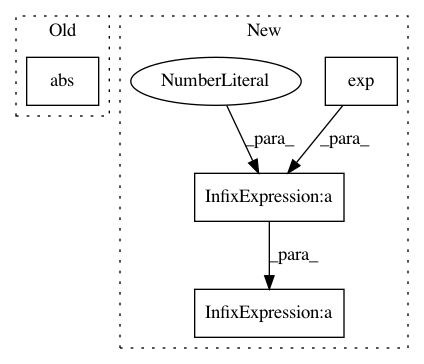

bb67346bff02567ae84af82046a036e8646e6c00,tests/chainer_tests/links_tests/normalization_tests/test_batch_renormalization.py,BatchRenormalizationTest,setUp,#BatchRenormalizationTest#,31
Before Change
// otherwise we will always get r=1, d=0
self.running_mean = self.mean + numpy.random.uniform(
-1, 1, self.mean.shape).astype(self.dtype)
self.running_var = numpy.abs(self.var + numpy.random.uniform(
-1, 1, self.var.shape).astype(self.dtype))
self.link.avg_mean[...] = self.running_mean
self.link.avg_var[...] = self.running_var
self.check_forward_optionss = {"atol": 1e-4, "rtol": 1e-3}
self.check_backward_optionss = {"atol": 1e-4, "rtol": 1e-3}
After Change
// Need to add some noise to running_mean and running_var,
// otherwise we will always get r=1, d=0
// Note that numpy.exp(3) > rmax ** 2 and 7 > dmax
self.running_var = self.var * numpy.exp(
numpy.random.uniform(-3, 3, self.var.shape)).astype(self.dtype)
self.running_mean = self.mean + (
(numpy.sqrt(self.running_var) + 0.1)
* numpy.random.uniform(-7, 7, self.mean.shape)
).astype(self.dtype)
self.link.avg_mean[...] = self.running_mean
self.link.avg_var[...] = self.running_var
self.check_forward_optionss = {"atol": 1e-4, "rtol": 1e-3}
In pattern: SUPERPATTERN
Frequency: 3
Non-data size: 4
Instances
Project Name: chainer/chainer
Commit Name: bb67346bff02567ae84af82046a036e8646e6c00
Time: 2019-09-04
Author: kataoka@preferred.jp
File Name: tests/chainer_tests/links_tests/normalization_tests/test_batch_renormalization.py
Class Name: BatchRenormalizationTest
Method Name: setUp
Project Name: keras-team/keras
Commit Name: 6c458ff28103580bbc3ba3d1acb38dc8e7eb12b2
Time: 2015-11-28
Author: francois.chollet@gmail.com
File Name: keras/layers/advanced_activations.py
Class Name: ELU
Method Name: get_output
Project Name: BerkeleyAutomation/gqcnn
Commit Name: 984cc1b6aab2356f6a94d7561a2727d58c42158f
Time: 2017-09-09
Author: vsatish@berkeley.edu
File Name: gqcnn/grasp_quality_function.py
Class Name: ComDiscApproachPlanaritySuctionQualityFunction
Method Name: quality